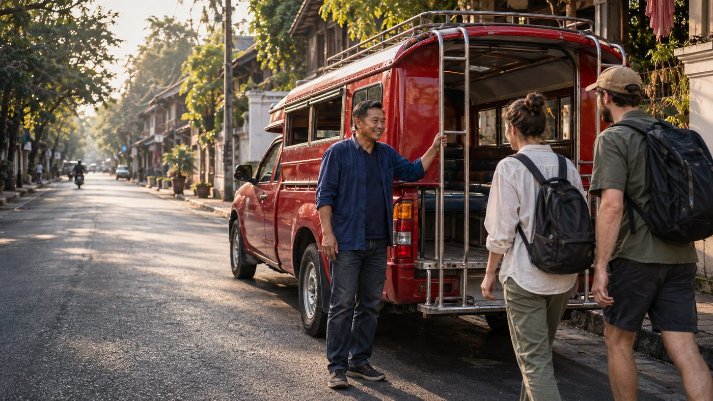
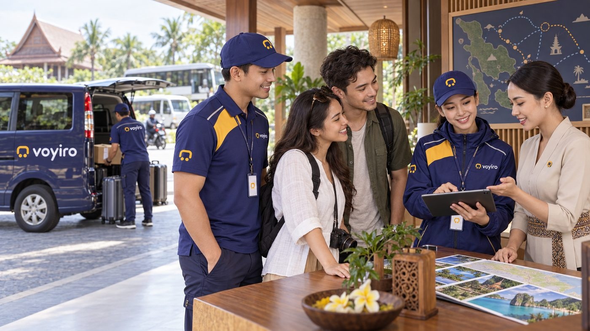
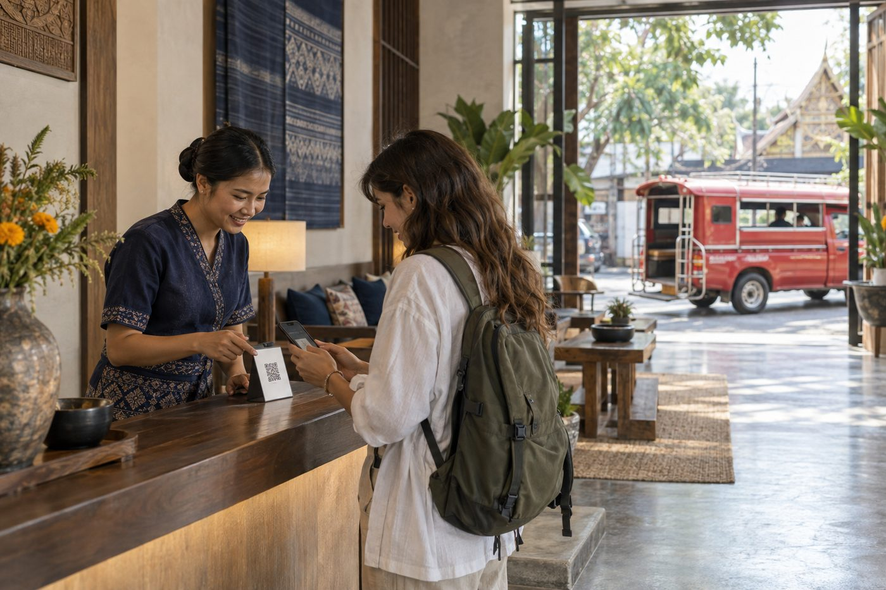
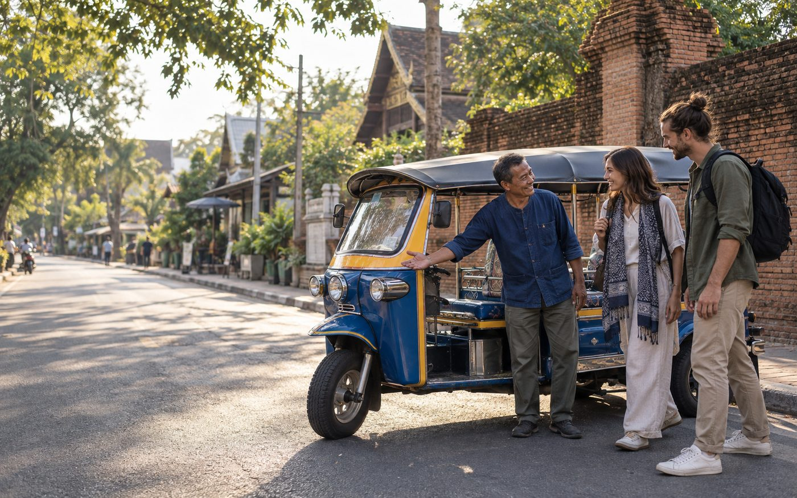
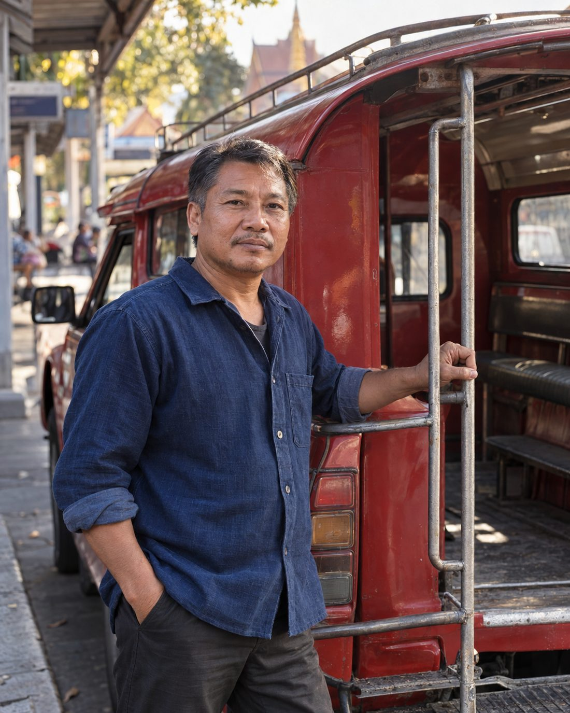
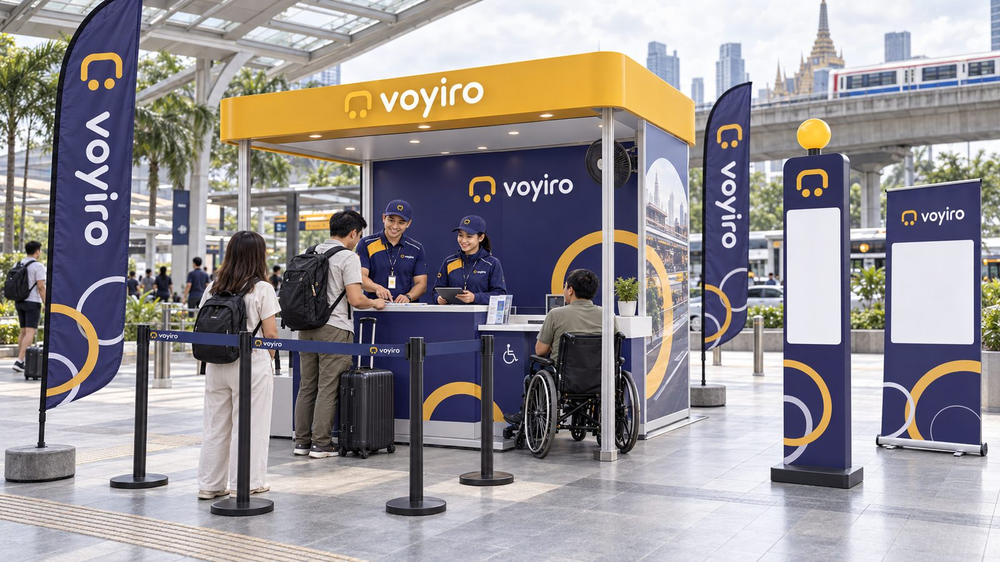

Местный транспорт,
которому можно доверять, в каждом городе
Вызывайте сонгтэу, тук-туки, самло и минивэны с настоящими лицензированными водителями общественного транспорта. Цена известна до посадки, а каждая поездка приносит доход местным жителям.
Не просто такси —
связь всего города
Все сервисы работают на едином аккаунте, с одними водителями, общей системой оплаты, безопасности и распределения дохода.

Местный транспорт
Сонгтэу, тук-тук, самло, минивэн — сразу или заранее, с ценой до подтверждения
Как вызвать
Поездки с местными
Маршруты от водителей и кооперативов, с трансфером от отеля
Смотреть поездки
Отели и турфирмы
Собственный QR-код партнёра и доля с каждой поездки
Для партнёров
Местная доставка
Небольшие посылки через водителей, которые знают город, с отслеживанием и подтверждением получателя · Скоро

Начинаем с водителей,
которым город уже доверяет
voyiro не выпускает частные машины конкурировать с общественным транспортом. Мы даём технологии легальным водителям, а заботу об участниках оставляем кооперативам.
- Лицензия на общественные перевозкиДвойная проверка документов — кооперативом и voyiro
- Ежедневная проверка личностиИмя, фото и номер машины совпадают с экраном пассажира
- Больше дохода, ниже комиссияОт 12% с понижением по уровню, выплаты каждую неделю
Начинаем с одного города,
думаем о всём регионе
Местный транспорт сохраняет характер своего города, а voyiro добавляет видимый и проверяемый стандарт — от севера Таиланда до соседних стран.
Видите индиго и бархатцы —
значит, можно доверять
Водители, полевая команда и партнёры носят униформу voyiro и проверяемое удостоверение.


Заметно издалека,
понятно вблизи
Точки посадки, указатели на 3 языках и стойки помощи, доступные всем, в том числе пользователям инвалидных колясок.
- จุดรับรถ · Pick-up point · ယာဉ်စောင့်နေရာКод точки посадки и собственный QR-код
- QR-табличка на стойке отеляСканируйте → видите цену → встречаете водителя → едете
Чем мы отличаемся от обычных приложений такси
Приведите voyiro в свой город
Транспортные кооперативы, отели и турфирмы могут присоединиться к пилотной программе без вступительного взноса.
Люди, места, транспорт и униформа на этой странице — концептуальные иллюстрации.